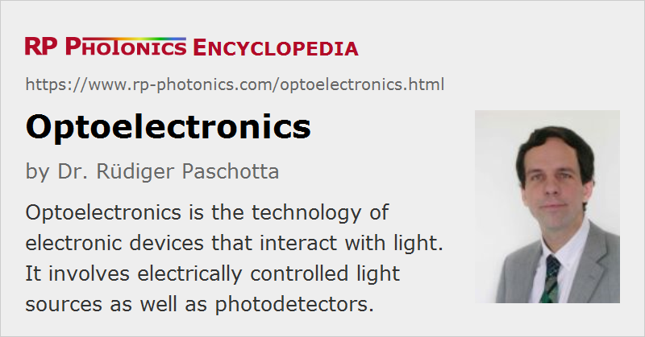

Optoelectronics
Definition: the technology of electronic devices that interact with light
Alternative term: optronics
German: Optoelektronik
Categories: photonic devices, optoelectronics
How to cite the article; suggest additional literature
Author: Dr. Rüdiger Paschotta
Optoelectronics (also called optronics) is the technology of electronic devices that interact with light, which may be in the visible, the infrared or ultraviolet spectral region. Examples of optoelectronic devices are:
- laser diodes, superluminescent diodes and light-emitting diodes (LEDs), converting electrical energy to light
- photodetectors (e.g. photodiodes and phototransistors), converting optical signals into electrical currents
- imaging detectors, based on electronic image sensors
- electro-optic modulators, used for manipulating the power, phase or polarization of light with an electrical control signal
- electroabsorption modulators
- opto-isolators for transmitting analog or digital signals while maintaining electric isolation
- photonic integrated circuits, hosting electrical and optical components on some kind of chip (see also: silicon photonics)
- photoemissive detectors such as phototubes and photomultipliers, also image intensifiers
Optoelectronic devices are used in a wide variety of application areas, such as optical fiber communications, laser technology, and all kinds of optical metrology.
Optoelectronics is largely based on semiconductor materials. Indirect band gap materials such as silicon and germanium are often sufficient for exploiting absorption processes, for example in photodetectors, but are generally less suited for emitting light. This is a substantial challenge for silicon photonics, where however various kinds of solutions has been found. Still, emitting devices such as laser diodes are largely based on direct band gap materials, particularly of III–V type – for example, gallium arsenide and indium phosphide.
Suppliers
The RP Photonics Buyer's Guide contains 25 suppliers for optoelectronic components and devices.
Questions and Comments from Users
Here you can submit questions and comments. As far as they get accepted by the author, they will appear above this paragraph together with the author’s answer. The author will decide on acceptance based on certain criteria. Essentially, the issue must be of sufficiently broad interest.
Please do not enter personal data here; we would otherwise delete it soon. (See also our privacy declaration.) If you wish to receive personal feedback or consultancy from the author, please contact him e.g. via e-mail.
By submitting the information, you give your consent to the potential publication of your inputs on our website according to our rules. (If you later retract your consent, we will delete those inputs.) As your inputs are first reviewed by the author, they may be published with some delay.
See also: electro-optics, quantum electronics, laser physics, silicon photonics, photodetectors, photodiodes, image sensors, laser diodes
and other articles in the categories photonic devices, optoelectronics
|  |
If you like this page, please share the link with your friends and colleagues, e.g. via social media:
These sharing buttons are implemented in a privacy-friendly way!